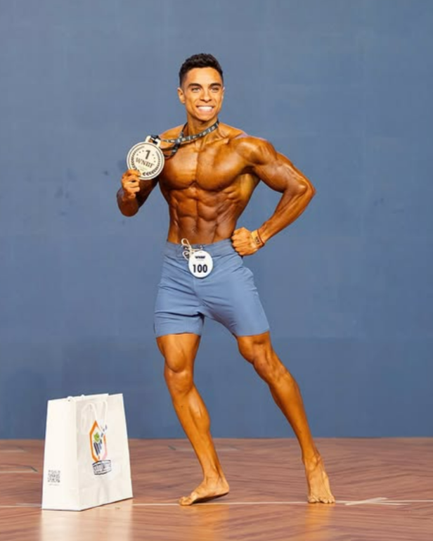
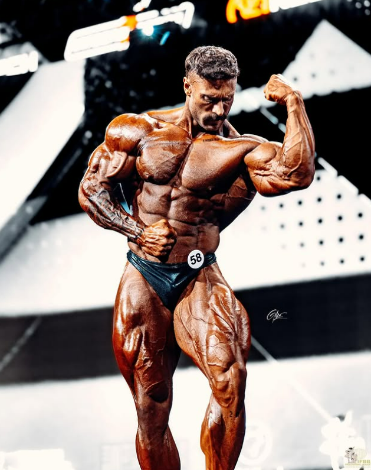
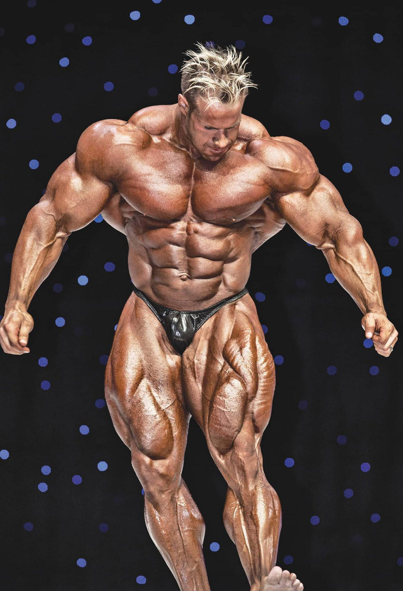
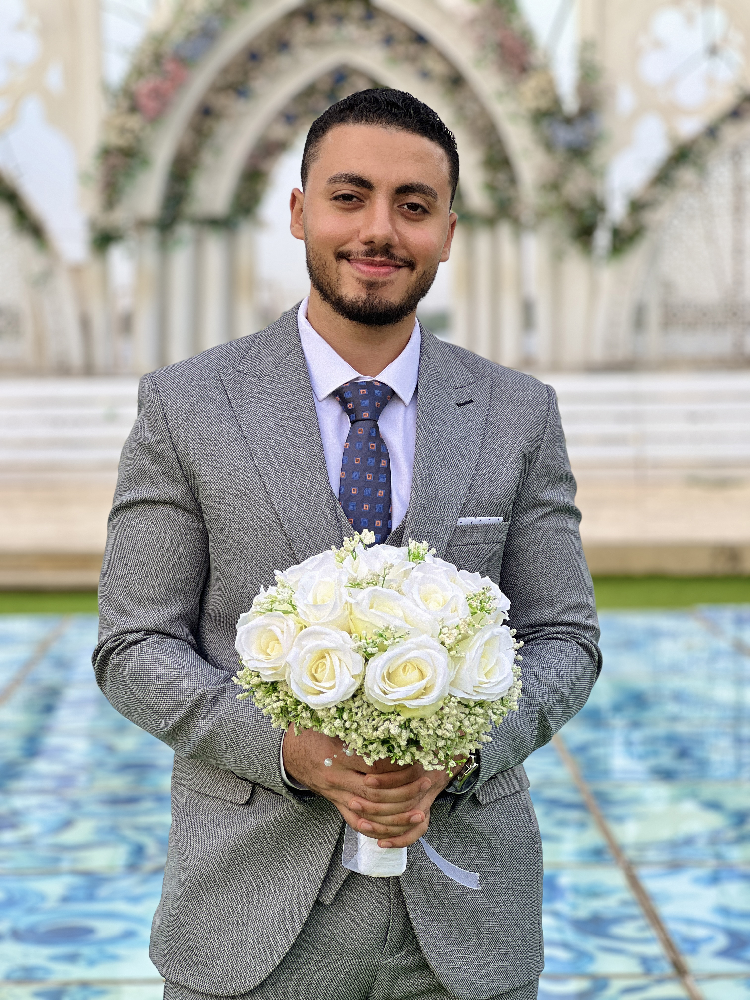

Il bodybuilding è uno degli sport più famosi che si praticano in palestra. L'obiettivo principale è sviluppare i muscoli per ottenere un fisico simmetrico, proporzionato e scolpito. In questa disciplina non conta quanto sei forte, ma come appare il tuo corpo: l’estetica è la cosa più importante. Per ottenere questi risultati, serve un allenamento mirato, abbinato a una dieta ben curata e a un recupero adeguato.
Una cosa interessante del bodybuilding è che si concentra molto sui dettagli: definizione muscolare, proporzioni e armonia tra i vari gruppi muscolari. Esistono diverse categorie in questo sport, ognuna con le sue caratteristiche e regole, ma tutte hanno un principio in comune: costruire un fisico che colpisce per la sua estetica. Ecco le categorie principali:
- Men’s Physique: Fisico atletico e asciutto, con muscoli proporzionati e un aspetto "da spiaggia". I concorrenti si presentano sul palco con pose semplici, indossando pantaloncini più lunghi. 
- Classic Physique: Una categoria ispirata ai fisici degli anni ’70, come quello di Arnold Schwarzenegger. Qui conta la simmetria, il volume muscolare non eccessivo e le pose classiche che esaltano le linee del corpo. 
- Bodybuilding Open: È la categoria principale e più "estrema", dove i partecipanti puntano al massimo sviluppo muscolare possibile. Le pose sono più tecniche e mirano a mostrare ogni singolo muscolo del corpo. 
Anche se ogni categoria ha pose e criteri diversi per le gare, la base dell’allenamento è sempre la stessa: esercizi con i pesi, programmi specifici per ogni gruppo muscolare e attenzione ai dettagli, come la simmetria e la definizione.
Il bodybuilding è molto popolare perché molte persone che iniziano ad andare in palestra lo fanno con l'obiettivo di migliorare il loro aspetto fisico. Ad esempio, c'è chi vuole sentirsi meglio con se stesso, apparire bene al mare o nei vestiti, oppure chi lo fa per lavori come il modeling. In tutti questi casi, l’allenamento dei bodybuilder diventa un punto di riferimento, perché è il metodo più efficace per costruire muscoli e migliorare il proprio fisico.

Infine, indipendentemente dal livello a cui lo si pratica, il bodybuilding non è solo estetica. È anche una sfida personale che richiede disciplina, dedizione e costanza. È uno sport che ti insegna a prenderti cura del tuo corpo e ti aiuta a sviluppare un carattere forte, sia fisicamente che mentalmente.